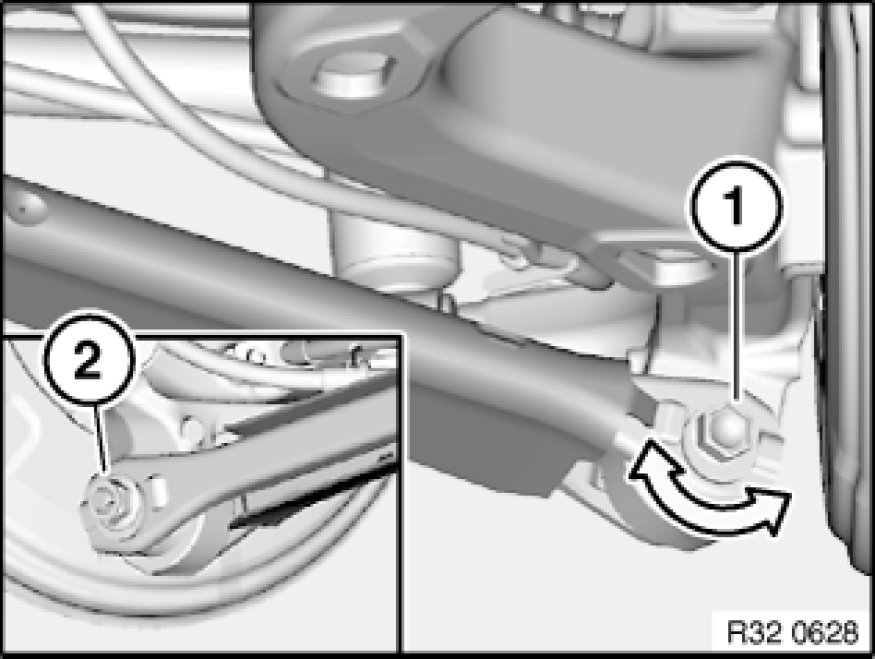
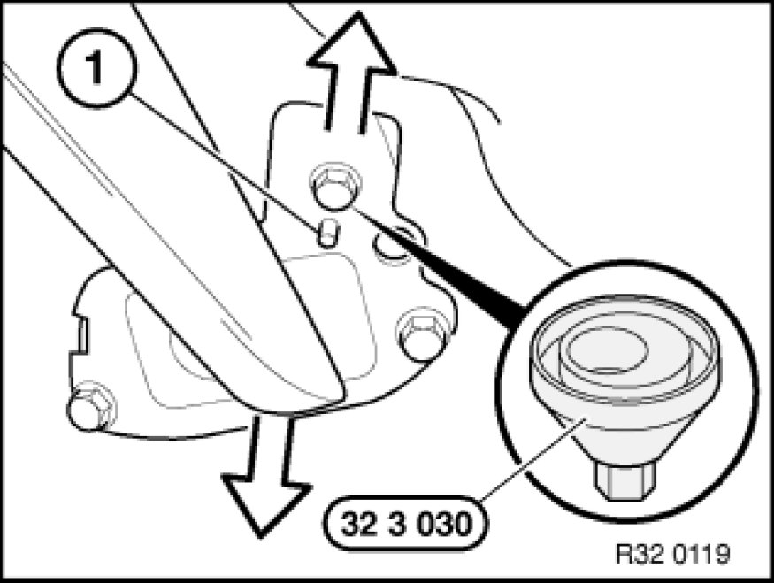

Adjusting Rear Axle
32 00 620 - Adjusting rear axle

Special tools required:
- 32 3 030 32 3 030 Setting Tool

Note:
A camber change always means a toe change as well. The camber must therefore be adjusted first.

Adjusting camber:
Replace nut (2) and tighten to 5 Nm.
Turn eccentric bolt (1) to adjust camber to setpoint value.
Tighten nut (2).
Tightening torque 33 32 25AZ Control Arms and Struts (Rear).

Adjusting toe:
Slacken bolts of bearing block by approx. 1 to 1.5 turns.
Attach special tool 32 3 030 32 3 030 Setting Tool to bolt head and pin (1).
Turn special tool 32 3 030 32 3 030 Setting Tool to adjust toe to specified value.
Tighten down bolts.
Tightening torque 33 32 13AZ Control Arms and Struts (Rear).